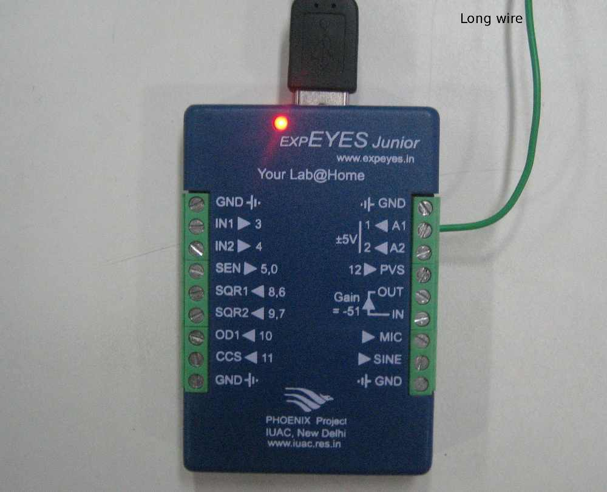

The AC mains supply waveform can be plotted by using a piece of wire as an antenna (NO direct contact with AC power line). The frequency is extracted from the captured waveform, by fitting it with the equation of a sinusoid. Connect one end of a long piece of wire to A0 and let the other end float near a power line. The amplitude of the signal will depend upon the length of the wire and its proximity to the power line. Try doing this using a laptop, far away from AC power lines.
